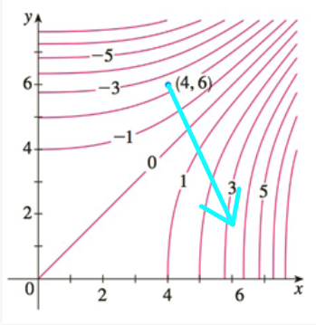
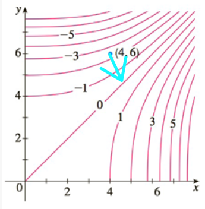
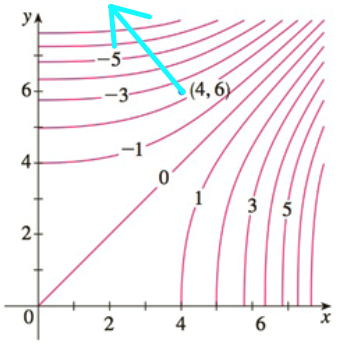

Section 4.4 Les dérivées directionnelles et le vecteur gradient
Outils 4.4.1.
Calculatrice à gradient et à dérivée directionnelle :
Application GeoGebra illustrant graphiquement les concepts de dérivée directionnelle et de gradient pour une fonction de deux variables.
Objectifs
-
Connaître la définition de la dérivée directionnelle au point \(P_0(x_0,y_0)\) d'une fonction de deux variables \(f(x,y)\) dans la direction donnée par un vecteur
\begin{equation*} \vec{u}=\begin{bmatrix}a\\b\end{bmatrix}\quad\text{tel que}\;a^2+b^2=1 \end{equation*}c'est-à-dire \(\vec{u}\) unitaire :
\begin{equation*} f_{\vec{u}}(P_0)=\lim_{h\rightarrow 0}\frac{f(P_0+h\vec{u})-f(P_0)}{h} \end{equation*} -
Savoir déterminer le gradient
\begin{equation*} \nabla f=\begin{bmatrix}f_x\\f_y\end{bmatrix} \end{equation*}d'une fonction de deux variables ou plus.
-
Savoir utiliser le gradient pour calculer la dérivée directionnelle
\begin{equation*} f_{\vec{u}}=\nabla f\cdot\vec{u}=\begin{bmatrix}f_x\\f_y\end{bmatrix}\cdot\begin{bmatrix}a\\b\end{bmatrix}=af_x+bf_y \end{equation*}où \(\vec{u}\) est unitaire.
-
Connaître le cas particulier où la direction est donnée par un angle \(\theta\text{,}\) ce qui revient à prendre le vecteur unitaire
\begin{equation*} \vec{u}=\begin{bmatrix}\cos\theta\\\sin\theta\end{bmatrix} \end{equation*}d'où
\begin{equation*} f_{\vec{u}}=\cos\theta f_x+\sin\theta f_y. \end{equation*} -
Étant donné une fonction de deux variables \(f(x,y)\text{,}\) savoir que
la dérivée directionnelle \(f_{\vec{u}}\) est maximale dans la direction indiquée par le gradient, et nulle dans toute direction perpendiculaire au gradient;
le taux de variation maximal de \(f\) au point \((x_0,y_0)\) est donné par \(\|\nabla f(x_0,y_0)\|\text{;}\)
le gradient \(\nabla f(x_0,y_0)\) est perpendiculaire à la courbe de niveau passant par \((x_0,y_0)\text{.}\)
Savoir utiliser le gradient pour donner une équation cartésienne de plan tangent et des équations paramétriques de droite normale à une surface en un point donné.
Exercice 4.4.1.
Soit \(f\) une fonction de deux variables dont seules les valeurs données dans la table suivante sont connues :
-
Explicitez la définition de la dérivée directionnelle
\begin{equation*} f_{\vec{u}}(P_0)=\lim_{h\rightarrow 0}\frac{f(P_0+h\vec{u})-f(P_0)}{h} \end{equation*}pour
\begin{equation*} P_0(1,2)\quad\text{et}\quad\vec{u}=\begin{bmatrix}\frac{\sqrt{2}}{2}\\-\frac{\sqrt{2}}{2}\end{bmatrix}. \end{equation*} Quelle approximation de \(f_{\vec{u}}(1,2)\) obtenez-vous en prenant \(h=\sqrt{2}\text{?}\)
Quelle approximation de \(f_{\vec{u}}(1,2)\) obtenez-vous en prenant \(h=-\sqrt{2}\text{?}\)
-
On a
\begin{equation*} f_{\vec{u}}(1,2)=\lim_{h\rightarrow 0}\frac{f\left(1+h\frac{\sqrt{2}}{2},2-h\frac{\sqrt{2}}{2}\right)-f(1,2)}{h}. \end{equation*} -
On obtient l'approximation de \(f_{\vec{u}}(1,2)\) suivante :
\begin{equation*} \sqrt{2}\approx 1{,}414. \end{equation*} -
On obtient l'approximation de \(f_{\vec{u}}(1,2)\) suivante :
\begin{equation*} \frac{3}{\sqrt{2}}\approx 2{,}121. \end{equation*}
-
Ajouter le vecteur
\begin{equation*} h\vec{u}=\begin{bmatrix}h\frac{\sqrt{2}}{2}\\-h\frac{\sqrt{2}}{2}\end{bmatrix} \end{equation*}au point \(P_0(1,2)\) donne le point de coordonnées
\begin{equation*} \left(1+h\frac{\sqrt{2}}{2},2-h\frac{\sqrt{2}}{2}\right) \end{equation*}donc
\begin{equation*} f_{\vec{u}}(1,2)=\lim_{h\rightarrow 0}\frac{f\left(1+h\frac{\sqrt{2}}{2},2-h\frac{\sqrt{2}}{2}\right)-f(1,2)}{h}. \end{equation*} -
En prenant \(h=\sqrt{2}\text{,}\) on obtient l'approximation de \(f_{\vec{u}}(1,2)\) suivante :
\begin{align*} \frac{f\left(1+\sqrt{2}\frac{\sqrt{2}}{2},2-\sqrt{2}\frac{\sqrt{2}}{2}\right)-f(1,2)}{\sqrt{2}}&=\frac{f(2,1)-f(1,2)}{\sqrt{2}}\\ &=\frac{9-7}{\sqrt{2}}\\ &=\sqrt{2}\\ &\approx 1{,}414. \end{align*} -
En prenant \(h=-\sqrt{2}\text{,}\) on obtient l'approximation de \(f_{\vec{u}}(1,2)\) suivante :
\begin{align*} \frac{f\left(1-\sqrt{2}\frac{\sqrt{2}}{2},2+\sqrt{2}\frac{\sqrt{2}}{2}\right)-f(1,2)}{-\sqrt{2}}&=\frac{f(0,3)-f(1,2)}{-\sqrt{2}}\\ &=\frac{4-7}{-\sqrt{2}}\\ &=\frac{3}{\sqrt{2}}\\ &\approx 2{,}121. \end{align*}
Exercice 4.4.2.
Voici un diagramme de courbes de niveaux
Combien vaut \(f(4,6)\) approximativement?
-
Si \(\vec{u}\) désigne le vecteur unitaire
\begin{equation*} \vec{u}=\frac{1}{\sqrt{2}}\begin{bmatrix}-1\\1\end{bmatrix} \end{equation*}déterminez le signe de la dérivée directionnelle \(f_{\vec{u}}(4,6)\text{.}\)
Représentez la direction du gradient \(\nabla f(4,6)\) par une flèche ayant pour origine le point \((4,6)\text{.}\)
-
Soit \(\vec{u}\) un vecteur unitaire quelconque et \(\alpha\in[0,2\pi[\) l'angle qu'il forme avec le gradient \(\nabla f(4,6)\text{.}\) Exprimez la dérivée directionnelle \(f_{\vec{u}}(4,6)\) à l'aide de \(\alpha\) et de la norme du gradient \(\|\nabla f(4,6)\|\text{,}\) puis déduisez-en pour quelles valeurs de \(\alpha\) la dérivée directionnelle est :
nulle;
minimale;
maximale.
-
Estimez la dérivée directionnelle de \(f\) au point \((4,6)\) dans la direction donnée par le gradient \(\nabla f(4,6)\text{,}\) càd
\begin{equation*} \vec{v}=\frac{\nabla f(4,6)}{\|\nabla f(4,6)\|}. \end{equation*} Estimez la norme du gradient \(\|\nabla f(4,6)\|\text{.}\)
Esquissez le gradient \(\nabla f(4,6)\) avec le point \((4,6)\) pour origine.
On lit approximativement \(-2{,}5\) sur le diagramme.
-
On voit que
\begin{equation*} f_{\vec{u}}(4,6)<0. \end{equation*} Le gradient \(\nabla f(4,6)\) est orienté comme suit :
-
On a
\begin{equation*} f_{\vec{u}}(4,6)=\|\nabla f(4,6)\|\cos(\alpha). \end{equation*}Par conséquent la dérivée directionnelle est :
nulle si et seulement si \(\alpha\pm\frac{\pi}{2}\) (càd \(\cos(\alpha)=0\));
minimale si et seulement si \(\alpha=\pi\) (càd \(\cos(\alpha)=-1\));
maximale si et seulement si \(\alpha=0\) (càd \(\cos(\alpha)=1\)).
-
On obtient l'estimation
\begin{equation*} \frac{\Delta z}{h}=\frac{1}{0{,}63}\approx1{,}59 \end{equation*}environ pour la dérivée directionnelle \(f_{\vec{v}}(4,6)\text{.}\)
-
On prend la même estimation qu'à la question précédente, soit
\begin{equation*} \|\nabla f(4,6)\|=1{,}59 \end{equation*}environ.
L'esquisse du gradient \(\nabla f(4,6)\) donne

-
Le point \((4,6)\) se situe entre les courbes de niveau
\begin{equation*} f(x,y)=-2\quad\text{et}\quad f(x,y)=-3 \end{equation*}alors disons que \(f(4,6)\) vaut approximativement \(-2{,}5\text{.}\)
-
Voici dans quelle direction pointe le vecteur \(\vec{u}\) :
En lisant les valeurs des courbes de niveau, on voit que que \(f(x,y)\) diminue lorsqu'on part du point \((4,6)\) en prenant la direction donnée par \(\vec{u}\text{.}\) On a donc\begin{equation*} f_{\vec{u}}(4,6)<0. \end{equation*} Le gradient \(\nabla f(4,6)\) est perpendiculaire à la courbe de niveau passant par le point \((4,6)\) et il pointe dans la direction où \(f(x,y)\) augmente le plus :
-
On a
\begin{align*} f_{\vec{u}}(4,6)&=\nabla f(4,6)\cdot\vec{u}\\ &=\|\nabla f(4,6)\|\cdot\|\vec{u}\|\cdot\cos(\alpha)\\ &=\|\nabla f(4,6)\|\cos(\alpha). \end{align*}Par conséquent la dérivée directionnelle est :
nulle si et seulement si \(\alpha\pm\frac{\pi}{2}\) (càd \(\cos(\alpha)=0\));
minimale si et seulement si \(\alpha=\pi\) (càd \(\cos(\alpha)=-1\));
maximale si et seulement si \(\alpha=0\) (càd \(\cos(\alpha)=1\)).
-
Estimons cette dérivée directionnelle par un quotient
\begin{equation*} \frac{\Delta z}{h} \end{equation*}en prenant les valeurs de \(z\) sur les deux courbes de niveau les plus proches du point \((4,6)\text{,}\) soit
\begin{equation*} \Delta z=-2-(-3)=1 \end{equation*}de sorte que \(h\) s'obtient en mesurant la distance entre ces lignes de niveau en passant par le point \((4,6)\) et en suivant la direction du gradient, soit perpendiculairement aux courbes de niveaux. Cela donne environ
\begin{equation*} h=0{,}63. \end{equation*}On obtient donc l'estimation
\begin{equation*} \frac{\Delta z}{h}=\frac{1}{0{,}63}\approx1{,}59 \end{equation*}environ pour la dérivée directionnelle \(f_{\vec{v}}(4,6)\text{.}\)
-
D'après la question 4., dans la direction
\begin{equation*} \vec{v}=\frac{\nabla f(4,6)}{\|\nabla f(4,6)\|} \end{equation*}donnée par le gradient (càd \(\alpha=0\)), la dérivée directionnelle est maximale et vaut
\begin{align*} f_{\vec{v}}(4,6)&=\|\nabla f(4,6)\|\cos(0)\\ &=\|\nabla f(4,6)\|. \end{align*}Nous pouvons donc prendre la même estimation qu'à la question précédente, soit
\begin{equation*} \|\nabla f(4,6)\|=1{,}59 \end{equation*}environ.
Maintenant qu'on connaît la direction et la norme du gradient \(\nabla f(4,6)\text{,}\) on peut en faire l'esquisse :
Exercice 4.4.3.
Déterminez le gradient de la fonction
puis évaluez-le au point
On trouve
et en particulier
au point \(P(1,-1)\text{.}\)
Par définition, on a
En particulier, au point \(P(1,-1)\text{,}\) cela donne
Exercice 4.4.4.
Calculez la dérivée directionnelle de la fonction
dans la direction du vecteur
au point
Attention, le vecteur \(\overrightarrow{v}\) n'est pas unitaire. Prenez
puis appliquez la formule
On trouve
-
Commençons par évaluer le gradient de \(f\)
\begin{align*} \nabla f&=\begin{bmatrix}f_x\\f_y\end{bmatrix}\\ &=\begin{bmatrix}\frac{\partial}{\partial x}(\arctan(xy))\\\frac{\partial}{\partial y}(\arctan(xy))\end{bmatrix}\\ &=\begin{bmatrix}\frac{y}{1+(xy)^2}\\\frac{x}{1+(xy)^2}\end{bmatrix} \end{align*}au point \(P(1,2)\) :
\begin{align*} \nabla f(1,2)&=\begin{bmatrix}\frac{2}{1+(1\cdot 2)^2}\\\frac{1}{1+(1\cdot 2)^2}\end{bmatrix}\\ &=\begin{bmatrix}\frac{2}{5}\\\frac{1}{5}\end{bmatrix}. \end{align*} -
Rendons ensuite la direction \(\vec{v}\) unitaire :
\begin{align*} \vec{u}&=\frac{\overrightarrow{v}}{\|\overrightarrow{v}\|}\\ &=\frac{1}{\sqrt{5^2+10^2}}\begin{bmatrix}5\\10\end{bmatrix}\\ &=\frac{1}{5\sqrt{5}}\begin{bmatrix}5\\10\end{bmatrix}\\ &=\begin{bmatrix}\frac{1}{\sqrt{5}}\\\frac{2}{\sqrt{5}}\end{bmatrix}. \end{align*} -
Calculons enfin le produit scalaire de ces deux vecteurs :
\begin{align*} f_{\vec{u}}(1,2)&=\nabla f(1,2)\cdot\vec{u}\\ &=\begin{bmatrix}\frac{2}{5}\\\frac{1}{5}\end{bmatrix}\cdot\begin{bmatrix}\frac{1}{\sqrt{5}}\\\frac{2}{\sqrt{5}}\end{bmatrix}\\ &=\frac{2}{5}\cdot\frac{1}{\sqrt{5}}+\frac{1}{5}\cdot\frac{2}{\sqrt{5}}\\ &=\frac{4}{5\sqrt{5}}. \end{align*}
Exercice 4.4.5.
Calculez la dérivée directionnelle de la fonction
au point
dans la direction donnée par l'angle
Déterminez le vecteur unitaire donnant la direction
puis appliquez la formule
On trouve
-
Commençons par évaluer le gradient de \(g\)
\begin{align*} \nabla g&=\begin{bmatrix}g_x\\g_y\end{bmatrix}\\ &=\begin{bmatrix}\frac{\partial}{\partial x}(\cos(xy)+y^2)\\\frac{\partial}{\partial y}(\cos(xy)+y^2)\end{bmatrix}\\ &=\begin{bmatrix}-y\sin(xy)\\-x\sin(xy)+2y\end{bmatrix} \end{align*}au point \(R(0,1)\) :
\begin{align*} \nabla g(0,1)&=\begin{bmatrix}-1\cdot\sin(0\cdot 1)\\-0\cdot\sin(0\cdot 1)+2\cdot 1\end{bmatrix}\\ &=\begin{bmatrix}0\\2\end{bmatrix}. \end{align*} -
Déterminons ensuite la direction unitaire \(\vec{u}\) :
\begin{align*} \vec{u}&=\begin{bmatrix}\cos\left(\frac{2\pi}{3}\right)\\\sin\left(\frac{2\pi}{3}\right)\end{bmatrix}\\ &=\begin{bmatrix}-\frac{1}{2}\\\frac{\sqrt{3}}{2}\end{bmatrix}. \end{align*} -
Calculons enfin le produit scalaire de ces deux vecteurs :
\begin{align*} g_{\vec{u}}(0,1)&=\nabla g(0,1)\cdot\vec{u}\\ &=\begin{bmatrix}0\\2\end{bmatrix}\cdot\begin{bmatrix}-\frac{1}{2}\\\frac{\sqrt{3}}{2}\end{bmatrix}\\ &=0\cdot\left(-\frac{1}{2}\right)+2\cdot\left(\frac{\sqrt{3}}{2}\right)\\ &=\sqrt{3}. \end{align*}
Exercice 4.4.6.
Déterminez le taux de variation de la fonction
au point
dans la direction du point
L'exercice demande de calculer la dérivée directionnelle de \(g\) au point \(R\text{,}\) dans la direction donnée par le vecteur unitaire
On trouve
-
Pour commencer, rappelons que
\begin{equation*} \nabla g(0,1)=\begin{bmatrix}0\\2\end{bmatrix} \end{equation*}grâce aux calculs de l'exercice 4.4.5 qui précède.
-
Déterminons ensuite la direction unitaire \(\vec{u}\) :
\begin{align*} \vec{u}&=\frac{\overrightarrow{RQ}}{\|\overrightarrow{RQ}\|}\\ &=\frac{1}{\sqrt{1^2+1^2}}\begin{bmatrix}1\\1\end{bmatrix}\\ &=\begin{bmatrix}\frac{1}{\sqrt{2}}\\\frac{1}{\sqrt{2}}\end{bmatrix}. \end{align*} -
Calculons enfin le produit scalaire de ces deux vecteurs :
\begin{align*} g_{\vec{u}}(0,1)&=\nabla g(0,1)\cdot\vec{u}\\ &=\begin{bmatrix}0\\2\end{bmatrix}\cdot\begin{bmatrix}\frac{1}{\sqrt{2}}\\\frac{1}{\sqrt{2}}\end{bmatrix}\\ &=0\cdot\frac{1}{\sqrt{2}}+2\cdot\frac{1}{\sqrt{2}}\\ &=\sqrt{2}. \end{align*}
Exercice 4.4.7.
On considère la fonction de deux variables
Déterminez la direction dans laquelle le taux de variation de \(f\) est le plus grand au point \((1,1)\text{.}\)
Quelle est la valeur de ce taux de variation maximal?
Le taux de variation (ou la dérivée directionnelle) de \(f\) au point \((x_0,y_0)\) est maximal dans la direction du gradient. Il vaut alors
-
Dans la direction du vecteur
\begin{equation*} (-1,-2). \end{equation*} -
On trouve
\begin{equation*} \frac{\sqrt{5}}{e^2}. \end{equation*}
Commençons par évaluer le gradient de \(f\)
au point \((1,1)\) :
-
Le taux de variation est maximal dans la direction donnée par le gradient \(\nabla f(1,1)\text{,}\) soit celle du vecteur
\begin{equation*} \begin{bmatrix}-1\\-2\end{bmatrix} \end{equation*}si on préfère.
-
Dans cette direction, le taux de variation vaut
\begin{align*} \|\nabla f(1,1)\|&=\left\|e^{-2}\begin{bmatrix}-1\\-2\end{bmatrix}\right\|\\ &=e^{-2}\left\|\begin{bmatrix}-1\\-2\end{bmatrix}\right\|\\ &=e^{-2}\sqrt{(-1)^2+(-2)^2}\\ &=\frac{\sqrt{5}}{e^2}. \end{align*}
Exercice 4.4.8.
Donnez les équations du plan tangent et de la normale à l'ellipsoïde d'équation
au point
On rappelle que pour une fonction de deux variables \(f(x,y)\text{,}\) le gradient \(\nabla f(x_0,y_0)\) est perpendiculaire à la courbe de niveau d'équation \(f(x,y)=k\) passant par \((x_0,y_0)\text{.}\)
De même, pour une fonction de trois variables \(F(x,y,z)\text{,}\) le gradient \(\nabla F(x_0,y_0,z_0)\) est perpendiculaire à la surface de niveau d'équation \(F(x,y,z)=k\) passant par \((x_0,y_0,z_0)\text{.}\)
Par conséquent, si
alors le plan tangent à la surface d'équation
au point \(P_0(x_0,y_0,z_0)\) a pour équation
et la droite normale à la surface passant par ce même point admet
pour équations paramétriques.
-
Le plan tangent en ce point admet pour équation cartésienne
\begin{equation*} x+y+z=11. \end{equation*} -
Et la droite normale à la surface qui passe par ce point admet pour équations paramétriques
\begin{equation*} \begin{cases} x=3+4t\\ y=3+4t\\ z=5+4t \end{cases} \quad\text{où}\;t\in\mathbb{R}. \end{equation*}
Voici de quoi vérifier graphiquement ces calculs à l'aide de Geogebra.
Introduisons la fonction de trois variables
dont la surface de niveau d'équation
correspond à l'ellisoïde considéré et contient le point \(P_0(3,3,5)\) car
-
Commençons par évaluer le gradient de \(F\)
\begin{align*} \nabla F&=\begin{bmatrix}F_x\\F_y\\F_z\end{bmatrix}\\ &=\begin{bmatrix}\frac{\partial}{\partial x}(2(x-2)^2+(y-1)^2+(z-3)^2)\\\frac{\partial}{\partial y}(2(x-2)^2+(y-1)^2+(z-3)^2)\\\frac{\partial}{\partial z}(2(x-2)^2+(y-1)^2+(z-3)^2)\end{bmatrix}\\ &=\begin{bmatrix}4(x-2)\\2(y-1)\\2(z-3)\end{bmatrix} \end{align*}au point \((3,3,5)\) :
\begin{align*} \nabla F(3,3,5))&=\begin{bmatrix}4\cdot(3-2)\\2\cdot(3-1)\\2\cdot(5-3)\end{bmatrix}\\ &=\begin{bmatrix}4\\4\\4\end{bmatrix}\\ &=4\begin{bmatrix}1\\1\\1\end{bmatrix}. \end{align*} -
Le plan tangent en ce point admet pour équation cartésienne
\begin{align*} \nabla F(3,3,5)\cdot\begin{bmatrix}x-3\\y-3\\z-5\end{bmatrix}=0&\quad\Leftrightarrow\quad\cancel{4}\cdot\begin{bmatrix}1\\1\\1\end{bmatrix}\cdot\begin{bmatrix}x-3\\y-3\\z-5\end{bmatrix}=0\\ &\quad\Leftrightarrow\quad(x-3)+(y-3)+(z-5)=0\\ &\quad\Leftrightarrow\quad x+y+z=11. \end{align*} -
Et la droite normale à la surface qui passe par ce point admet pour équations paramétriques
\begin{equation*} \begin{bmatrix}x\\y\\z\end{bmatrix}=\begin{bmatrix}3\\3\\5\end{bmatrix}+t\,\nabla F(3,3,5)\quad\text{où}\;t\in\mathbb{R} \end{equation*}soit
\begin{equation*} \begin{cases} x=3+4t\\ y=3+4t\\ z=5+4t \end{cases} \quad\text{où}\;t\in\mathbb{R} \end{equation*}ou, si on préfère,
\begin{equation*} \begin{cases} x=3+s\\ y=3+s\\ z=5+s \end{cases} \quad\text{où}\;s\in\mathbb{R}. \end{equation*}
Voici de quoi vérifier graphiquement ces calculs à l'aide de Geogebra.
PS : Merci à Frédérick et son frère d'avoir vu mon erreur de calcul!
Synthèse 4.4.2.
Pour une certaine région de l'espace, la température est donnée par
où \(T\) est en degrés Celsius et \(x, y, z\) sont en mètres.
(a)
Donner la température au point \(P(2,-1,2)\text{.}\)
En évaluant la fonction \(T(x,y,z)\) au point considéré, on obtient
(b)
Trouver le taux de variation de la température au point \(P(2,-1,2)\) dans la direction du point \(Q(3,-3,3)\text{.}\) Interpréter.
Il s'agit de calculer la dérivée directionnelle.
-
Commençons par évaluer le gradient de \(T\)
\begin{align*} \nabla T&=\begin{bmatrix}T_x\\T_y\\T_z\end{bmatrix}\\ &=\begin{bmatrix}\frac{\partial}{\partial x}(200e^{-x^2-3y^2-9z^2})\\\frac{\partial}{\partial y}\left(200e^{-x^2-3y^2-9z^2}\right)\\\frac{\partial}{\partial z}(200e^{-x^2-3y^2-9z^2})\end{bmatrix}\\ &=200e^{-x^2-3y^2-9z^2}\begin{bmatrix}-2x\\-6y\\-18z\end{bmatrix}\\ &=-400e^{-x^2-3y^2-9z^2}\begin{bmatrix}x\\3y\\9z\end{bmatrix} \end{align*}au point \(P(2,-1,2)\) :
\begin{align*} \nabla T(2,-2,1)&=-400\exp\left(-2^2-3\cdot(-1)^2-9\cdot 2^2\right)\begin{bmatrix}2\\3\cdot(-1)\\9\cdot 2\end{bmatrix}\\ &=-400e^{-43}\begin{bmatrix}2\\-3\\18\end{bmatrix}. \end{align*} -
Déterminons ensuite la direction unitaire \(\vec{u}\) :
\begin{align*} \vec{u}&=\frac{\overrightarrow{PQ}}{\|\overrightarrow{PQ}\|}\\ &=\frac{1}{\sqrt{1^2+(-2)^2+1^2}}\begin{bmatrix}1\\-2\\1\end{bmatrix}\\ &=\frac{1}{\sqrt{6}}\begin{bmatrix}1\\-2\\1\end{bmatrix}. \end{align*} -
Calculons enfin le produit scalaire de ces deux vecteurs :
\begin{align*} T_{\vec{u}}(2,-1,2)&=\nabla T(2,-1,2)\cdot\vec{u}\\ &=-400e^{-43}\begin{bmatrix}2\\-3\\18\end{bmatrix}\cdot\frac{1}{\sqrt{6}}\begin{bmatrix}1\\-2\\1\end{bmatrix}\\ &=-\frac{400}{e^{43}\sqrt{6}}(2\cdot 1+(-3)\cdot(-2)+18\cdot 1)\\ &=-\frac{400\cdot 26}{e^{43}\sqrt{6}}\\ &\approx -8{,}98\times 10^{-16}\;\text{degrés/mètre}. \end{align*}
Cela veut dire qu'à partir du point \(P(2,-1,2)\text{,}\) la température diminue d'environ \(8,98\times 10^{-16}\) degrés Celsius par mètre parcouru en direction du point \(Q(3,-3,3)\text{.}\)
(c)
Déterminer la direction dans laquelle la température augmente le plus rapidement si on se place au point \(P(2,-1,2)\text{.}\)
C'est dans la direction donnée par le gradient
soit celle du vecteur
(d)
Calculer le taux de variation maximal de la température au point \(P(2,-1,2)\text{.}\)
Il s'agit de la norme du gradient
soit
Si vous souhaitez en faire plus ou disposer de plus d'exemples, vous pouvez consulter les exercices 4, 6, 8, 12, 20, 50 dont voici les solutions.
Sinon, passez directement aux exercices prioritaires de cette section.
Remarque : Voici le document distribué les sessions précédentes. Et en voilà le solutionnaire.